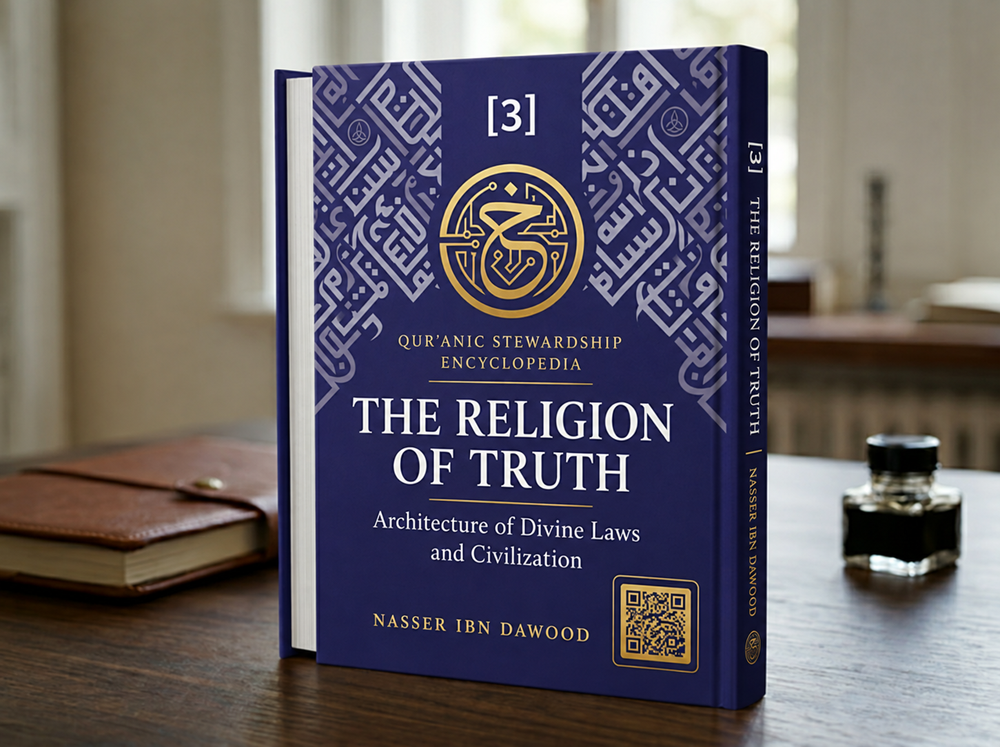

Nasser Ibn Dawood

Text extracted from the author-supplied Word edition; consult the original source.
Preparing the reader…
The Religion of Truth: The Architecture of Divine Laws and Civilization
A Condensed Conceptual Adaptation of Volume Three
Nasser Ibn Dawood
I. The Global Knowledge Manifesto
Knowledge is a universal right: The author firmly believes that wisdom should not be locked behind paywalls or language barriers.
Global Access Policy: All books in this library are available for free in multiple digital formats (PDF, DOCX, TXT).
The Digital Library: As of early 2026, the collection hosts 68 volumes (34 in Arabic and 34 in English), fully optimized for AI-assisted research and digital archiving.
Official Platforms: Main Website: https://nasserhabitat.github.io/nasser-books-v2/
GitHub: nasserhabitat/nasser-books
II. Translator’s Note: The Bridge of Meaning
This English edition is a condensed conceptual adaptation. It is not a word-for-word translation, but rather an “extraction of essence.” It presents the core philosophical framework in accessible English, omitting the exhaustive linguistic debates and classical references found in the original Arabic text.
For the academic researcher: The original Arabic version remains the primary source for comprehensive linguistic analysis, detailed exegesis (Tafsir), and the complete bibliography.
The Religion of Truth: The Architecture of Divine Laws and Civilization
A Condensed Conceptual Adaptation of Volume Three
This adaptation summarizes the conceptual argument for readers who do not read Arabic. It does not replace the Arabic original or claim to reproduce every linguistic argument, citation, or interpretive detail.
From orientation to effective action
The third volume turns from inward orientation and the calibration of awareness toward action in the world. It asks how human beings can build just and flourishing societies while recognizing the regularities that govern nature, history, and collective life. “The religion of truth” is treated by the author as a framework for responsible action in accordance with reality and divine guidance. The architectural vocabulary is an organizing model, not a Qur’anic technical term.
Knowledge, language, and revealed guidance
The book places knowledge and language at the foundation of public action. It examines how terms are defined, how the Qur’an, the Book, and remembrance are related in the author’s reading, and how the unity of religion can coexist with the plurality of prophetic messages. These are interpretive discussions. The author’s distinctions should be followed in the complete Arabic text rather than flattened into familiar categories or treated as uncontested scholarly consensus.
The laws of life and the responsibility to learn
The volume emphasizes that good intentions alone do not produce good outcomes. Human action meets stable conditions, causes, material limits, and social consequences. Learning therefore includes observing the world, understanding causes, and accepting the realities of things rather than relying on wishful thinking. The author links the duty of knowledge with the study of natural and historical regularities, while maintaining that the relation between revelation and the universe requires careful interpretation.
Human agency and moral accountability
The discussion connects guidance with work: people are responsible for using their capacities, taking appropriate means, and evaluating results. Change begins with the person but does not end there. The book traces a movement from self-reform to family and community practices, then to institutional and civilizational arrangements. In this account, stewardship is neither domination without limits nor withdrawal from the world; it is accountable participation within moral and causal constraints.
A balanced social order
The volume applies its framework to the individual, family, society, institutions, the state, the economy, and the natural world. The author asks what balance requires in each domain and how breakdown in one domain can affect others. The discussions of family relations and law, including divorce, are presented as the author’s readings and proposals. They should be assessed against the cited Qur’anic passages and the reasoning offered, not mistaken for a translation of the text or a statement of universal legal consensus.
Institutions and contemporary civilization
The book considers education, economic organization, media, social and legislative structures, public administration, and institutional design as parts of civilization-building. It asks whether institutions serve human flourishing and justice or turn into self-preserving powers. The author’s idea of “institutional idolatry” names the danger that a tool, bureaucracy, or political system may become an unquestionable end. This is a critical model for analysis rather than a claim that all institutions are inherently corrupt.
Rise, decline, and the limits of historical determinism
The final movement studies patterns of renewal and collapse, comparing historical cases and asking what conditions allow societies to rise or fail. It challenges explanations that reduce civilizations to biological inevitability and proposes examining choices, meanings, justice, knowledge, and the use of power. The book does not present history as a mechanical cycle; rather, it seeks recurring lessons while leaving room for agency and variation.
Witness and a responsible conclusion
The idea of witness is presented as a normative responsibility: a community should make its understanding of truth visible through just conduct and a social order that can be examined. It is not merely a title of honor or a claim to superiority. The volume concludes that civilization is built when sound reference, balanced awareness, knowledge of causes, ethical institutions, and practical work reinforce one another. Each link remains open to testing and correction.